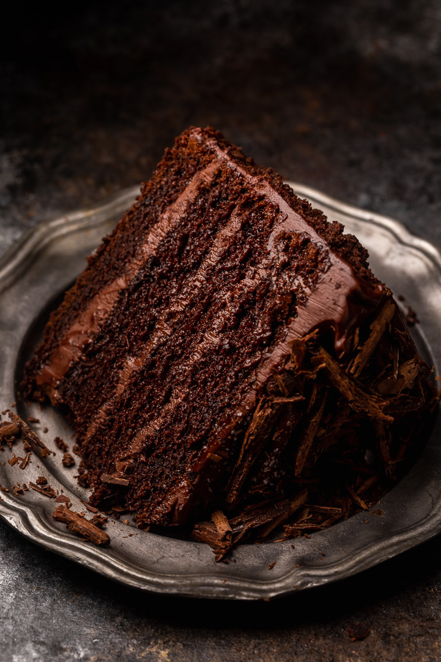

Chocolate Cake

They call it black magic because its full of
rich dark chocolate and is delicious
beyond explanation -- try it and you'll see!
Ingredients
- cooking spray
- 2 (15-ounce) cans cherry in fruit juice
- 1 (15 1/4 ounce) package
- chocolate cake mix
- 3 large eggs
- 1/2 cup vegetable oil
- 1 cup packed brown sugar
- 1/2 cup unsalted butter
- 1/4 cup heavy cream
- 1 teaspoon vanilla extract
- 2 cups cmelted chocolate
Steps
- Make the batter:Stir the dry ingredients together in a mixing bowl.
Add the wet ingredients and beat with an electric mixer for about three minutes.
Stir in the boiling water by hand.
- Bake the cake:Pour the batter into two prepared cake pans.
Bake in a preheated oven until a toothpick inserted in the center comes out clean.
Let the cakes cool slightly before removing from the pans.
- Frost the cake:While the cake finishes cooling to room temperature,
make the frosting: Cream the butter, stir in the cocoa and confectioners' sugar alternately with the milk and vanilla,
and beat until it's smooth and spreadable.
When the cake is completely cooled, top each layer with the frosting. Stack them and continue frosting until
the cake is completely covered.
Go back to Home